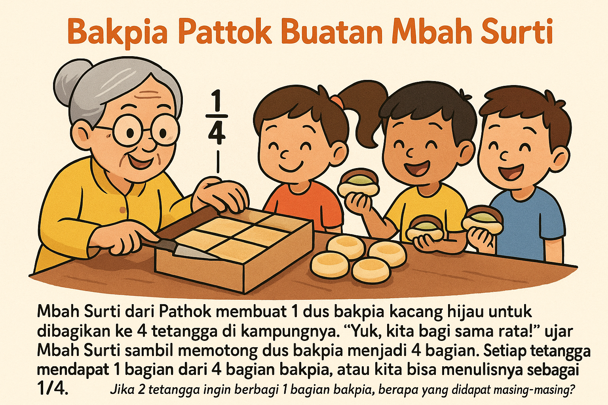
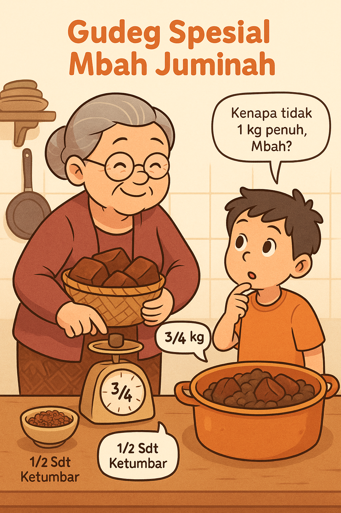
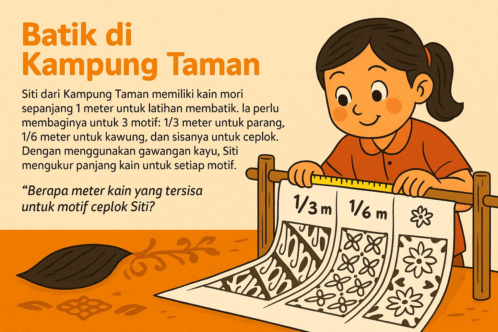
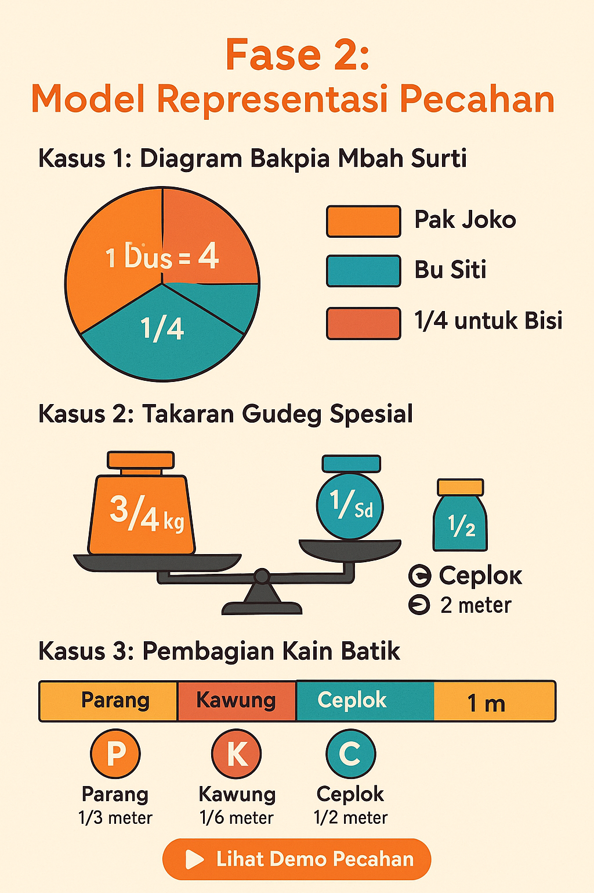
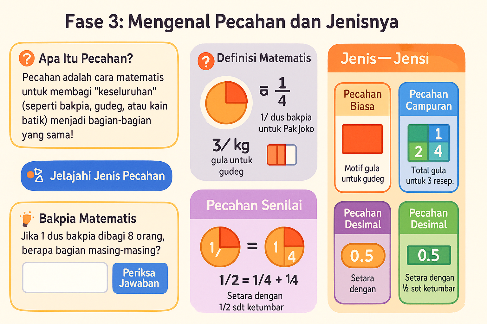
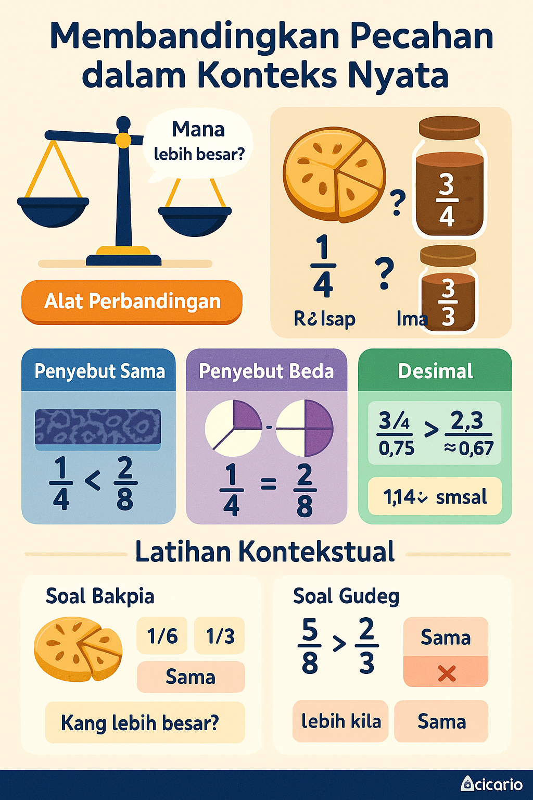
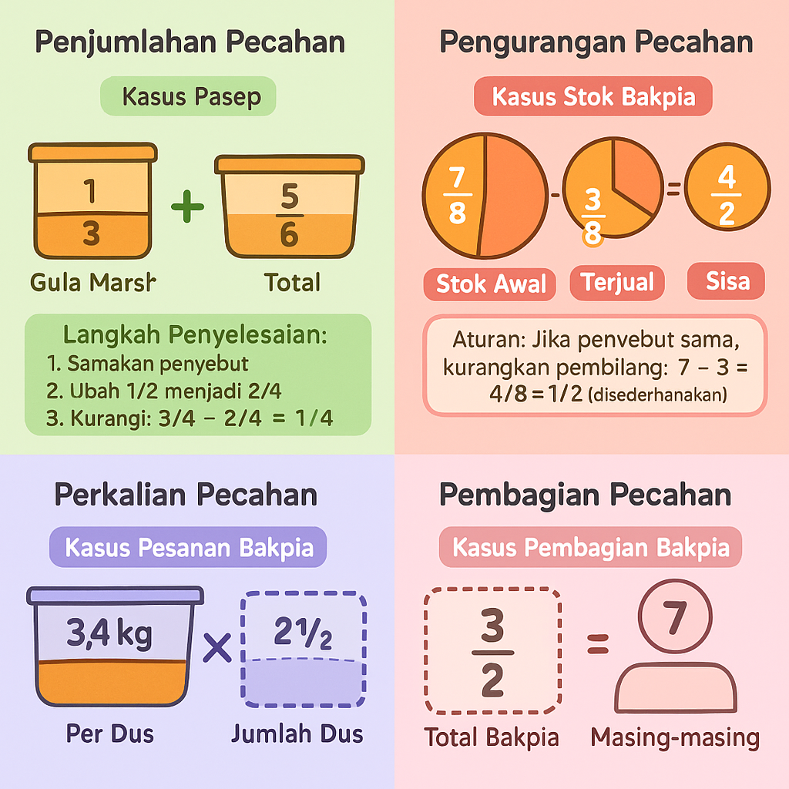
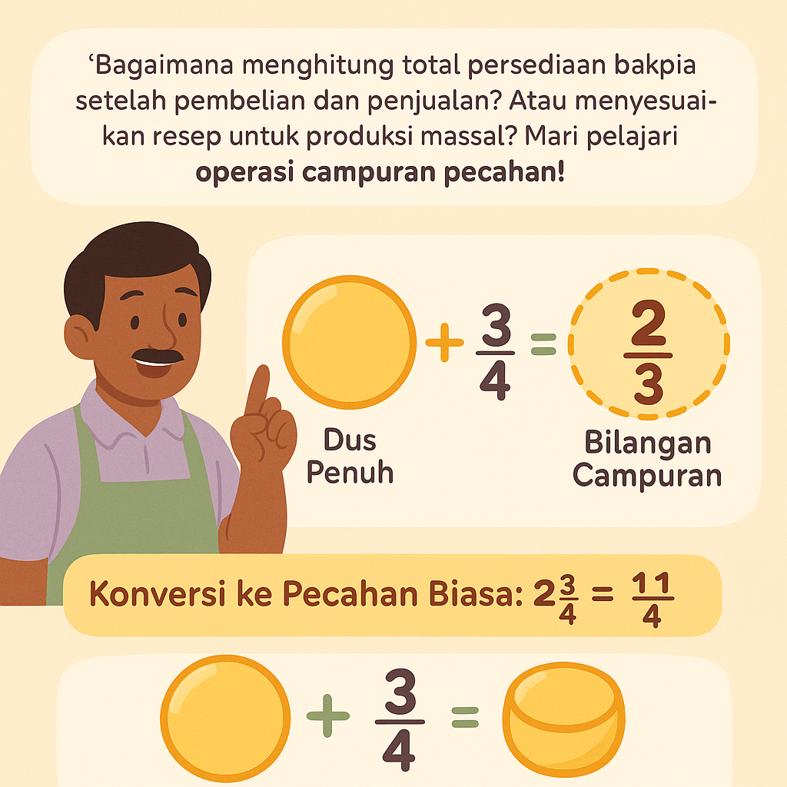
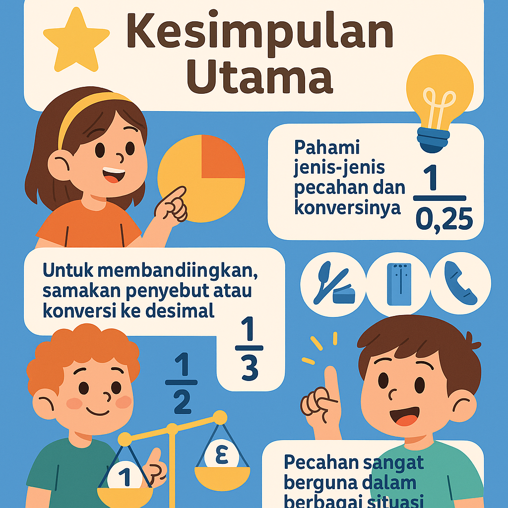
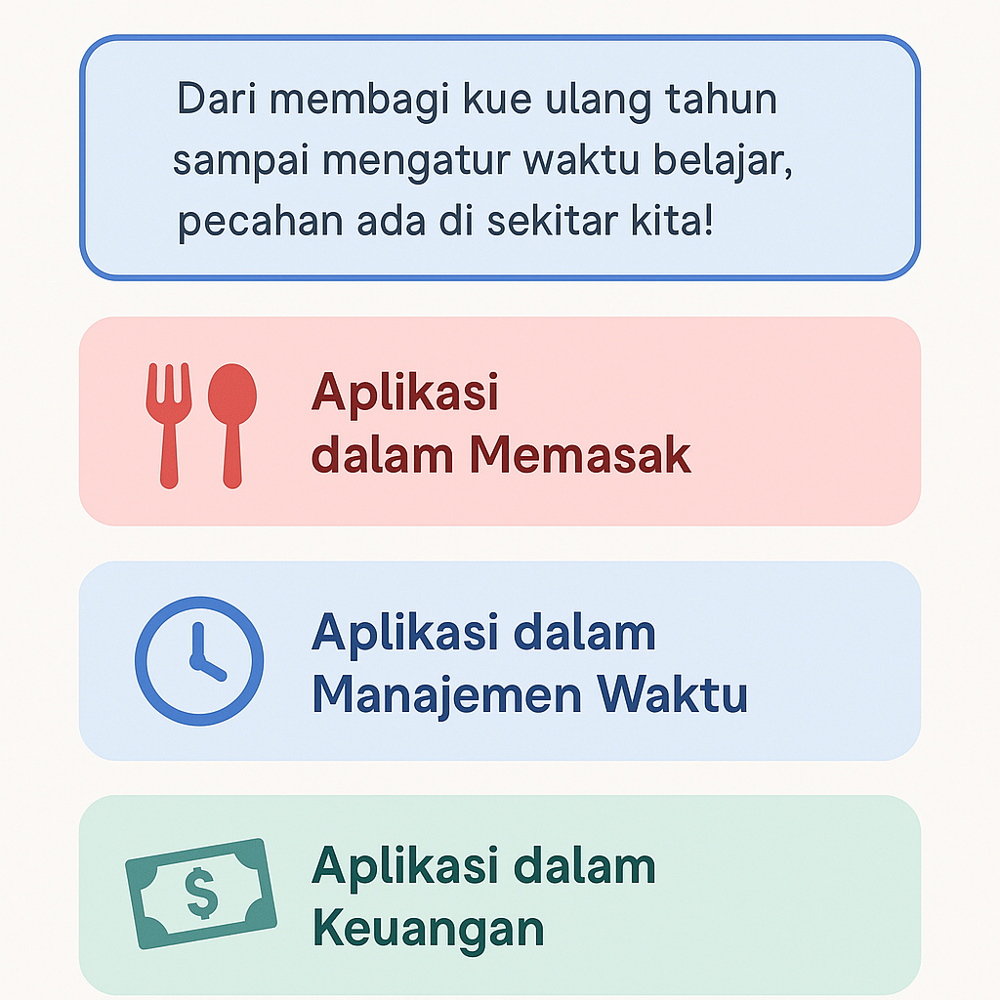

Belajar Pecahan melalui Cerita Nyata

Bakpia Pathok Buatan Mbah Surti
Mbah Surti dari Pathok membuat 1 dus bakpia kacang hijau untuk dibagikan ke 4 tetangga di kampungnya. "Yuk, kita bagi sama rata!" ujar Mbah Surti sambil memotong dus bakpia menjadi 4 bagian. Setiap tetangga mendapat 1 bagian dari 4 bagian bakpia, atau kita bisa menulisnya sebagai 1/4.
"Jika 2 tetangga ingin berbagi 1 bagian bakpia, berapa yang didapat masing-masing?"

Gudeg Spesial Mbah Juminah
Mbah Juminah dari Wijilan sedang membuat gudeg. Resep turun-temurunnya membutuhkan 3/4 kg gula jawa dan 1/2 sendok teh ketumbar. "Kenapa tidak 1 kg penuh, Mbah?" tanya Deni. Mbah Juminah menjelaskan bahwa takaran yang tepat penting agar gudeg tidak terlalu manis. Mereka mengukur 3/4 kg dengan timbangan tradisional.
"Jika ingin membuat untuk acara sekaten, perlu 3 kali resep, berapa kg gula jawa yang dibutuhkan?"

Batik di Kampung Taman
Siti dari Kampung Taman memiliki kain mori sepanjang 1 meter untuk latihan membatik. Ia perlu membaginya untuk 3 motif: 1/3 meter untuk parang, 1/6 meter untuk kawung, dan sisanya untuk ceplok. Dengan menggunakan gawangan kayu, Siti mengukur panjang kain untuk setiap motif.
"Berapa meter kain yang tersisa untuk motif ceplok Siti?"
Diskusi Kelas:
Berdasarkan cerita-cerita di atas, coba temukan contoh lain dalam kehidupan sehari-hari di mana kita menggunakan bilangan pecahan. Bagaimana cara kita menyelesaikan masalah-masalah tersebut?
Aktivitas Pembelajaran Pecahan
Pembagian Makanan
Praktik membagi kue atau buah menjadi bagian-bagian yang sama untuk memahami konsep pecahan sederhana.
Pengukuran Real
Menggunakan alat ukur untuk membandingkan panjang benda dalam bentuk pecahan (1/2 meter, 1/4 meter).
Permainan Pecahan
Permainan kartu dengan gambar pecahan untuk mencocokkan representasi visual dengan notasi pecahan.
Fase 2: Model Representasi Pecahan

🔍 Membangun Model Visual Pecahan
"Dari pembagian bakpia, takaran gudeg, hingga kain batik - mari kita wujudkan konsep pecahan dalam bentuk visual yang mudah dipahami!"
Kasus 1: Diagram Bakpia Mbah Surti
1 dus bakpia dibagi 4 tetangga → masing-masing ¼ bagian:
Jika 2 tetangga berbagi 1 bagian → masing-masing dapat ½ dari ¼ = ⅛ dus
Kasus 2: Takaran Gudeg Spesial
Resep membutuhkan ¾ kg gula dan ½ sdt ketumbar:
Untuk 3 kali resep → 3 × ¾ = 2¼ kg gula
Kasus 3: Pembagian Kain Batik
1 meter kain dibagi untuk 3 motif:
Parang
⅓ meter
Kawung
⅙ meter
Ceplok
½ meter
✂️ Aktivitas Pembelajaran Pecahan
- Pizza Kertas: Potong lingkaran kertas menjadi bagian pecahan dan susun kombinasi
- Gelas Bertingkat: Ukur cairan berwarna dalam gelas transparan dengan skala pecahan
- Puzzle Pecahan: Susun potongan kain/kertas dengan ukuran pecahan berbeda membentuk persegi utuh
Fase 3: Mengenal Pecahan dan Jenisnya

🔢 Apa Itu Pecahan?
"Pecahan adalah cara matematis untuk membagi 'keseluruhan' (seperti bakpia, gudeg, atau kain batik) menjadi bagian-bagian yang sama!"
Definisi Matematis
Bentuk umum: \(\frac{a}{b}\), di mana:
- \(a\) (pembilang): Bagian yang diambil (contoh: 1 potong bakpia dari 4).
- \(b\) (penyebut): Total bagian keseluruhan (contoh: 1 dus bakpia dibagi 4).
\(\frac{1}{4}\) dus bakpia untuk Pak Joko
\(\frac{3}{4}\) kg gula untuk gudeg
Jenis-Jenis Pecahan
1. Pecahan Biasa
Bentuk \(\frac{a}{b}\). Contoh dari kasus batik:
2. Pecahan Campuran
Gabungan bilangan bulat + pecahan. Contoh modifikasi kasus gudeg:
3. Pecahan Senilai
Nilai sama, bentuk berbeda. Contoh dari kasus bakpia:
4. Pecahan Desimal
Bentuk persepuluhan. Contoh kasus gudeg:
Coba Praktikkan!
💡 Bakpia Matematis
"Jika 1 dus bakpia dibagi 8 orang, berapa bagian masing-masing?"
🎨 Batik Pecahan
"Jika motif Kawung diperbesar jadi ⅓ meter, berapa total kain?"
Fase 4: Membandingkan Pecahan dalam Konteks Nyata

⚖️ Membandingkan Pecahan
"Bagaimana menentukan bagian bakpia yang lebih besar? Atau takaran gula yang lebih kecil? Mari bandingkan!"
Dasar Membandingkan
Kasus Bakpia
Pak Joko membagi 1 dus bakpia menjadi 8 bagian sama rata (\(\frac{1}{8}\)), sedangkan Bu Rina membagi dus serupa menjadi 4 bagian (\(\frac{1}{4}\)). Mana yang lebih besar?
1 potong dari 8
1 potong dari 4
Kasus Gudeg
Resep gudeg membutuhkan \(\frac{3}{4}\) kg gula merah, tetapi Ima hanya punya \(\frac{2}{3}\) kg. Cukupkah?
Kebutuhan resep
Stok Ima
3 Cara Membandingkan
1. Penyebut Sama
Bandingkan pembilangnya saja. Contoh pada kain batik:
Motif \(\frac{2}{5}\)m lebih pendek dari \(\frac{3}{5}\)m
2. Penyebut Beda
Samakan penyebut (KPK). Contoh pembagian bakpia:
\(\frac{1}{4}\) vs \(\frac{2}{8}\) → \(\frac{2}{8}\) = \(\frac{2}{8}\)
\(\frac{1}{4}\) = \(\frac{2}{8}\) (bagian sama besar)
3. Desimal
Konversi ke bentuk desimal. Contoh takaran gula:
\(\frac{3}{4}\) = 0.75 > \(\frac{2}{3}\) ≈ 0.67
Lebih mudah dibandingkan dalam bentuk desimal
Latihan Kontekstual
Soal Bakpia
Jika 1 dus bakpia dibagi 6 orang (\(\frac{1}{6}\)) vs dibagi 3 orang (\(\frac{1}{3}\)), mana yang lebih besar?
Soal Gudeg
Manakah yang lebih kecil: \(\frac{5}{8}\) kg gula merah atau \(\frac{2}{3}\) kg?
Fase 5: Operasi Pecahan dalam Kehidupan Sehari-hari

🧮 Operasi Pecahan
"Bagaimana menghitung total bakpia yang dibagikan? Atau menyesuaikan resep gudeg? Mari belajar operasi pecahan!"
Penjumlahan Pecahan
Kasus Bakpia
Pak Joko membagi 1 dus bakpia menjadi 8 bagian. Hari pertama dijual \(\frac{3}{8}\) dus, hari kedua \(\frac{2}{8}\) dus. Berapa total penjualan?
Hari Pertama
Hari Kedua
Total
Aturan: Jika penyebut sama, jumlahkan pembilangnya: \(\frac{3}{8} + \frac{2}{8} = \frac{3+2}{8} = \frac{5}{8}\)
Kasus Resep
Ima mencampur \(\frac{1}{2}\) kg gula merah dan \(\frac{1}{3}\) kg gula pasir. Berapa total gula?
Gula Merah
Gula Pasir
Total
Langkah Penyelesaian:
- Cari KPK penyebut: KPK dari 2 dan 3 adalah 6
- Ubah ke pecahan senilai: \(\frac{1}{2} = \frac{3}{6}\) dan \(\frac{1}{3} = \frac{2}{6}\)
- Jumlahkan: \(\frac{3}{6} + \frac{2}{6} = \frac{5}{6}\)
Pengurangan Pecahan
Kasus Stok Bakpia
Pak Joko memiliki \(\frac{7}{8}\) dus bakpia. Jika terjual \(\frac{3}{8}\) dus, berapa sisa stok?
Stok Awal
Terjual
Sisa
Aturan: Jika penyebut sama, kurangkan pembilang: \(\frac{7}{8} - \frac{3}{8} = \frac{4}{8} = \frac{1}{2}\) (disederhanakan)
Kasus Takaran Bahan
Resep membutuhkan \(\frac{3}{4}\) kg tepung, tetapi Ima hanya punya \(\frac{1}{2}\) kg. Berapa kekurangannya?
Kebutuhan
Stok
Kekurangan
Langkah Penyelesaian:
- Samakan penyebut: KPK 4 dan 2 adalah 4
- Ubah \(\frac{1}{2}\) menjadi \(\frac{2}{4}\)
- Kurangi: \(\frac{3}{4} - \frac{2}{4} = \frac{1}{4}\)
Perkalian Pecahan
Kasus Pesanan Bakpia
Setiap dus berisi \(\frac{3}{4}\) kg bakpia. Jika Bu Rina memesan 2\(\frac{1}{2}\) dus, berapa total beratnya?
Per Dus
Jumlah Dus
Total
Langkah Penyelesaian:
- Ubah bilangan campuran: 2\(\frac{1}{2}\) = \(\frac{5}{2}\)
- Kalikan pembilang dengan pembilang: 3×5 = 15
- Kalikan penyebut dengan penyebut: 4×2 = 8
- Hasil: \(\frac{15}{8}\) = 1\(\frac{7}{8}\)
Pembagian Pecahan
Kasus Pembagian Bakpia
Pak Joko memiliki 3\(\frac{1}{2}\) dus bakpia untuk dibagikan ke 7 pedagang sama rata. Berapa masing-masing bagian?
Total Bakpia
Pedagang
Per Pedagang
Langkah Penyelesaian:
- Ubah bilangan campuran: 3\(\frac{1}{2}\) = \(\frac{7}{2}\)
- Ubah pembagian menjadi perkalian dengan kebalikan: \(\frac{7}{2} ÷ 7 = \frac{7}{2} × \frac{1}{7}\)
- Kalikan: \(\frac{7×1}{2×7} = \frac{7}{14} = \frac{1}{2}\)
Latihan Operasi Pecahan
Soal Penjumlahan
Bu Rina mencampur \(\frac{2}{3}\) kg tepung dan \(\frac{1}{4}\) kg maizena. Berapa total campuran?
Soal Perkalian
Jika 1 loyang kue membutuhkan \(\frac{3}{4}\) kg tepung, berapa kebutuhan untuk 2\(\frac{1}{3}\) loyang?
Fase 6: Operasi Campuran Pecahan dalam Bisnis Bakpia

🧮 Operasi Campuran Pecahan
"Bagaimana menghitung total persediaan bakpia setelah pembelian dan penjualan? Atau menyesuaikan resep untuk produksi massal? Mari pelajari operasi campuran pecahan!"
Memahami Bilangan Campuran
Kasus Stok Awal Bakpia
Pak Joko memiliki 2 dus penuh bakpia dan 3/4 dus tambahan. Bagaimana menyatakannya dalam bilangan campuran?
Dus Penuh
Tambahan
Bilangan Campuran
Konversi ke Pecahan Biasa: \(2\frac{3}{4} = \frac{(2×4)+3}{4} = \frac{11}{4}\)
Operasi Hitung Campuran
Kasus Manajemen Stok
Pak Joko memiliki stok awal 3\(\frac{1}{2}\) dus bakpia. Hari ini menerima kiriman 2\(\frac{1}{4}\) dus dan menjual 1\(\frac{3}{4}\) dus. Berapa stok akhir?
Langkah Penyelesaian:
- Ubah semua ke pecahan biasa:
- \(3\frac{1}{2} = \frac{7}{2}\)
- \(2\frac{1}{4} = \frac{9}{4}\)
- \(1\frac{3}{4} = \frac{7}{4}\)
- Samakan penyebut (KPK 2 dan 4 adalah 4):
- \(\frac{7}{2} = \frac{14}{4}\)
- Hitung operasi: \(\frac{14}{4} + \frac{9}{4} - \frac{7}{4} = \frac{16}{4} = 4\) dus
Stok Awal
Stok Akhir
Kasus Produksi Massal
Untuk memproduksi 1 dus bakpia dibutuhkan 1\(\frac{1}{2}\) kg tepung. Jika Pak Joko memiliki 5\(\frac{1}{4}\) kg tepung, berapa dus bakpia yang bisa dibuat? Berapa sisa tepung?
Langkah Penyelesaian:
- Ubah ke pecahan biasa:
- \(5\frac{1}{4} = \frac{21}{4}\) kg tepung
- \(1\frac{1}{2} = \frac{3}{2}\) kg per dus
- Bagi total tepung dengan kebutuhan per dus: \(\frac{21}{4} ÷ \frac{3}{2} = \frac{21}{4} × \frac{2}{3} = \frac{42}{12} = 3\frac{6}{12} = 3\frac{1}{2}\) dus
- Artinya bisa membuat 3 dus penuh
- Hitung sisa tepung: \(\frac{21}{4} - (3 × \frac{3}{2}) = \frac{21}{4} - \frac{9}{2} = \frac{21}{4} - \frac{18}{4} = \frac{3}{4}\) kg
Tepung Tersedia
Per Dus
Bisa Diproduksi
Sisa Tepung
Operasi Campuran Kompleks
Kasus Analisis Bisnis
Dalam seminggu, Toko Bakpia Pak Joko menjual \(2\frac{1}{2}\) dus di hari kerja (Senin-Jumat) dan \(3\frac{3}{4}\) dus di akhir pekan (Sabtu-Minggu). Jika harga per dus Rp120.000, berapa total pendapatan mingguan?
Langkah Penyelesaian:
- Hitung total penjualan:
- Hari kerja: \(5 × 2\frac{1}{2} = 5 × \frac{5}{2} = \frac{25}{2}\) dus
- Akhir pekan: \(2 × 3\frac{3}{4} = 2 × \frac{15}{4} = \frac{30}{4}\) dus
- Total: \(\frac{25}{2} + \frac{30}{4} = \frac{50}{4} + \frac{30}{4} = \frac{80}{4} = 20\) dus
- Hitung pendapatan: \(20 × 120.000 = Rp2.400.000\)
Hari Kerja
Akhir Pekan
Harga per Dus
Total Pendapatan
Latihan Operasi Campuran
Soal Operasi Campuran
Pak Joko memiliki 4\(\frac{1}{2}\) dus bakpia. Dia membeli lagi 2\(\frac{3}{4}\) dus, kemudian menjual 3\(\frac{1}{8}\) dus. Berapa sisa bakpia?
Soal Aplikasi Bisnis
Jika 1 dus bakpia berisi 20 biji dan Pak Joko memiliki stok 3\(\frac{3}{5}\) dus, berapa total biji bakpia yang tersedia?
Refleksi Pembelajaran Bilangan Pecahan

📚 Inti Pembelajaran Pecahan
"Dari konsep dasar hingga penerapan kompleks, pecahan adalah alat matematika yang powerful dalam kehidupan sehari-hari!"
Pengertian Dasar
b
Pecahan adalah bilangan yang menggambarkan bagian dari keseluruhan, ditulis sebagai \(\frac{a}{b}\) dimana:
- a (pembilang): Bagian yang diambil/dimiliki
- b (penyebut): Total bagian keseluruhan
Contoh: \(\frac{1}{4}\) dus bakpia berarti 1 bagian dari 4 bagian yang sama.
Jenis-Jenis Pecahan
Pecahan Biasa
Bentuk \(\frac{a}{b}\) dengan a dan b bilangan bulat.
Pecahan Campuran
Gabungan bilangan bulat dan pecahan biasa.
Pecahan Desimal
Pecahan dalam bentuk persepuluhan.
Membandingkan Pecahan
3 Cara Membandingkan Pecahan:
- Penyebut sama: Bandingkan pembilang
- Penyebut beda: Samakan penyebut (KPK)
- Desimal: Konversi ke bentuk desimal
Contoh: \(\frac{3}{4}\) > \(\frac{2}{3}\) karena 0.75 > 0.67
Operasi Dasar Pecahan
Penjumlahan
Samakan penyebut, jumlahkan pembilang:
\(\frac{1}{4} + \frac{1}{2} = \frac{1}{4} + \frac{2}{4} = \frac{3}{4}\)
Pengurangan
Samakan penyebut, kurangkan pembilang:
\(\frac{3}{4} - \frac{1}{2} = \frac{3}{4} - \frac{2}{4} = \frac{1}{4}\)
Perkalian
Kalikan pembilang dengan pembilang, penyebut dengan penyebut:
\(\frac{1}{2} × \frac{3}{4} = \frac{3}{8}\)
Pembagian
Balik pecahan kedua lalu kalikan:
\(\frac{1}{2} ÷ \frac{1}{4} = \frac{1}{2} × \frac{4}{1} = \frac{4}{2} = 2\)
Operasi Campuran Pecahan
Contoh Soal:
\(2\frac{1}{2} + \frac{3}{4} × \frac{1}{2} - \frac{1}{8}\)
Langkah Penyelesaian:
- Ubah ke pecahan biasa: \(2\frac{1}{2} = \frac{5}{2}\)
- Kerjakan perkalian dulu: \(\frac{3}{4} × \frac{1}{2} = \frac{3}{8}\)
- Samakan penyebut: \(\frac{5}{2} = \frac{20}{8}\)
- Hitung: \(\frac{20}{8} + \frac{3}{8} - \frac{1}{8} = \frac{22}{8} = 2\frac{6}{8} = 2\frac{3}{4}\)
Penerapan Praktis
Memasak
Menyesuaikan resep
Keuangan
Membagi anggaran
Pengukuran
Membagi bahan bangunan
Waktu
Membagi jadwal
Kesimpulan Utama
- Pecahan merepresentasikan bagian dari keseluruhan
- Pahami jenis-jenis pecahan dan konversinya
- Untuk membandingkan, samakan penyebut atau konversi ke desimal
- Dalam operasi campuran, ikuti urutan operasi matematika
- Pecahan sangat berguna dalam berbagai situasi kehidupan nyata
Fase 7: Penerapan Pecahan dalam Aktivitas Sehari-hari

🌍 Pecahan dalam Kehidupan Sehari-hari
"Dari membagi kue ulang tahun sampai mengatur waktu belajar, pecahan ada di sekitar kita!"
Aplikasi dalam Memasak
Kasus Resep Keluarga
Ima ingin membuat bakpia dengan resep turun temurun yang biasanya untuk 4\(\frac{1}{2}\) lusin, tetapi hanya perlu membuat 1\(\frac{1}{2}\) lusin. Bagaimana menyesuaikan takaran bahan?
Resep Asli
4\(\frac{1}{2}\) lusin
Takaran Awal
Faktor Skala
\(\frac{1\frac{1}{2}}{4\frac{1}{2}} = \frac{1}{3}\)
Perhitungan
Contoh:
2\(\frac{1}{4}\) kg → \(\frac{3}{4}\) kg
Penyesuaian
Langkah Penyelesaian:
- Hitung faktor skala: \(\frac{1\frac{1}{2}}{4\frac{1}{2}} = \frac{\frac{3}{2}}{\frac{9}{2}} = \frac{3}{9} = \frac{1}{3}\)
- Kalikan semua bahan dengan \(\frac{1}{3}\):
- Tepung: \(2\frac{1}{4} × \frac{1}{3} = \frac{9}{4} × \frac{1}{3} = \frac{9}{12} = \frac{3}{4}\) kg
- Gula: \(1\frac{1}{2} × \frac{1}{3} = \frac{3}{2} × \frac{1}{3} = \frac{3}{6} = \frac{1}{2}\) kg
Aplikasi dalam Manajemen Waktu
Kasus Jadwal Belajar
Andi memiliki waktu belajar 3\(\frac{1}{2}\) jam sehari. Dia membaginya untuk:
- Matematika: \(\frac{1}{4}\) dari total waktu
- IPA: \(\frac{1}{3}\) dari sisa waktu setelah Matematika
- Bahasa: Waktu tersisa
Matematika
\(\frac{1}{4} × 3\frac{1}{2} = \frac{7}{8}\) jam
IPA
\(\frac{1}{3} × \frac{21}{8} = \frac{7}{8}\) jam
Bahasa
1\(\frac{3}{4}\) jam
Perhitungan Detail:
- Total waktu: \(3\frac{1}{2} = \frac{7}{2}\) jam
- Matematika: \(\frac{1}{4} × \frac{7}{2} = \frac{7}{8}\) jam
- Sisa waktu: \(\frac{7}{2} - \frac{7}{8} = \frac{28}{8} - \frac{7}{8} = \frac{21}{8}\) jam
- IPA: \(\frac{1}{3} × \frac{21}{8} = \frac{7}{8}\) jam
- Bahasa: \(\frac{21}{8} - \frac{7}{8} = \frac{14}{8} = 1\frac{6}{8} = 1\frac{3}{4}\) jam
Aplikasi dalam Keuangan
Kasus Anggaran Bulanan
Keluarga Andi memiliki penghasilan Rp5.250.000 per bulan. Mereka mengalokasikan:
- \(\frac{2}{5}\) untuk kebutuhan pokok
- \(\frac{1}{3}\) untuk tagihan & transportasi
- \(\frac{1}{6}\) untuk tabungan
- Sisanya untuk hiburan
Kebutuhan Pokok
Rp2.100.000
Tagihan
Rp1.750.000
Tabungan
Rp875.000
Hiburan
Rp525.000
Perhitungan:
- Kebutuhan pokok: \(\frac{2}{5} × 5.250.000 = 2.100.000\)
- Tagihan: \(\frac{1}{3} × 5.250.000 = 1.750.000\)
- Tabungan: \(\frac{1}{6} × 5.250.000 = 875.000\)
- Total alokasi: \( \frac{2}{5} + \frac{1}{3} + \frac{1}{6} = \frac{12}{30} + \frac{10}{30} + \frac{5}{30} = \frac{27}{30} = \frac{9}{10} \)
- Hiburan: \(1 - \frac{9}{10} = \frac{1}{10} = 525.000\)
Aplikasi dalam Pengukuran
Kasus Renovasi Rumah
Pak Joko ingin memasang rak di dinding yang panjangnya 2\(\frac{3}{4}\) meter. Dia memiliki 3 papan dengan panjang masing-masing \(\frac{7}{8}\) meter. Cukupkah papan-papan tersebut?
Kebutuhan
2\(\frac{3}{4}\) m
Papan 1
\(\frac{7}{8}\) m
Papan 2
\(\frac{7}{8}\) m
Papan 3
\(\frac{7}{8}\) m
Analisis:
- Total panjang papan: \(3 × \frac{7}{8} = \frac{21}{8} = 2\frac{5}{8}\) meter
- Kebutuhan: \(2\frac{3}{4} = \frac{11}{4} = 2\frac{6}{8}\) meter
- Selisih: \(2\frac{6}{8} - 2\frac{5}{8} = \frac{1}{8}\) meter kurang
- Solusi: Pak Joko perlu memotong 1 papan tambahan sepanjang \(\frac{1}{8}\) meter
Latihan Aplikasi Pecahan
Soal Resep Masakan
Resep kue membutuhkan 3\(\frac{1}{4}\) cangkir tepung untuk 12 porsi. Jika Anda ingin membuat 9 porsi, berapa tepung yang dibutuhkan?
Soal Anggaran Keuangan
Seorang siswa menerima uang saku Rp300.000 per minggu. Dia menggunakan \(\frac{1}{3}\) untuk transportasi, \(\frac{1}{4}\) untuk makan, dan \(\frac{1}{6}\) untuk fotokopi. Berapa sisa uangnya?
Proses Matematisasi dalam RME
Konteks Nyata
Memulai dengan masalah autentik dari kehidupan sehari-hari yang melibatkan bilangan pecahan.
Model Of Represntasi
Siswa mengembangkan model representasi bentuk pecahan untuk memahami konsep.
Model For Representasi
Mengetahui pengertian dari bilangan pecahan dan jenis-jenisnya.
Model Of Comparisons
Membandingkan pecahan dalam konteks nyata.
Model Of Operations
Mengetahui operasi pada bilangan pecahan (penjumlahan, pemngurangan, perkalian, dan pembagian).
Model For Mixed Operations
Mengembangkan bentuk operasi pecahan menjadi bentuk operasi pecahan campuran.
Refleksi
Menyimpulkan pembelajaran bilangan pecahan.
Penerapan
Mengaplikasikan konsep ke situasi baru yang lebih kompleks.